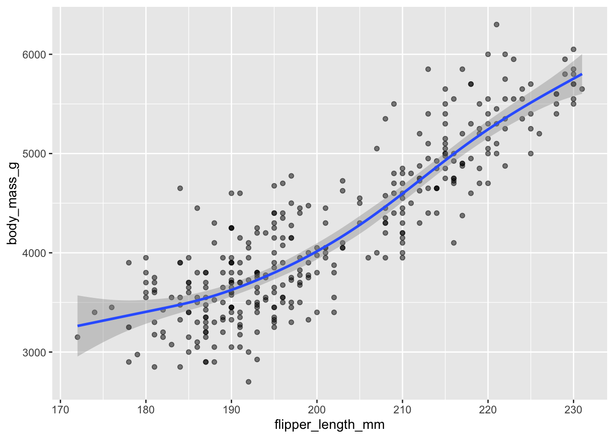

install.packages("palmerpenguins")Demo 04: Nonlinear Regression and Pairs Plots
More fun with penguins
The graphs below don’t have proper titles, axis labels, legends, etc. Please take care to do this on your own graphs. Throughout this demo we will use the palmerpenguins dataset. To access the data, you will need to install the palmerpenguins package:
Load the penguins dataset
We load the penguins data in the same way as the previous demos:
library(tidyverse)
library(palmerpenguins)
data(penguins)
head(penguins)# A tibble: 6 × 8
species island bill_length_mm bill_depth_mm flipper_length_mm body_mass_g
<fct> <fct> <dbl> <dbl> <int> <int>
1 Adelie Torgersen 39.1 18.7 181 3750
2 Adelie Torgersen 39.5 17.4 186 3800
3 Adelie Torgersen 40.3 18 195 3250
4 Adelie Torgersen NA NA NA NA
5 Adelie Torgersen 36.7 19.3 193 3450
6 Adelie Torgersen 39.3 20.6 190 3650
# ℹ 2 more variables: sex <fct>, year <int>LOESS regression with ggplot
As discussed in lecture, we can use local regression / loess smoothing in geom_smooth():
penguins |>
ggplot(aes(x = flipper_length_mm, y = body_mass_g)) +
geom_point(alpha = 0.5) +
geom_smooth(method = "loess")`geom_smooth()` using formula = 'y ~ x'Warning: Removed 2 rows containing non-finite outside the scale range
(`stat_smooth()`).Warning: Removed 2 rows containing missing values or values outside the scale range
(`geom_point()`).
Note that this is actually the default behavior of geom_smooth() if you do NOT specify the method:
penguins |>
ggplot(aes(x = flipper_length_mm, y = body_mass_g)) +
geom_point(alpha = 0.5) +
geom_smooth()`geom_smooth()` using method = 'loess' and formula = 'y ~ x'Warning: Removed 2 rows containing non-finite outside the scale range
(`stat_smooth()`).Warning: Removed 2 rows containing missing values or values outside the scale range
(`geom_point()`).Note that if you don’t put anything in geom_smooth, it will select “auto”, meaning that choice for the smoothing method will be based on the size of the dataset (i.e., nrow(dataset)). LOESS is selected (i.e., method = "loess") for less than 1,000 observations. Otherwise, mgcv::gam() is used with formula = y ~ s(x, bs = "cs") and method = "REML".
So, if your dataset is smaller than 1,000 observations but want to use the same gam() model that geom_smooth() will use by default for larger datasets, then use geom_smooth(method = "gam", formula = y ~ s(x, bs = "cs")):
penguins |>
ggplot(aes(x = flipper_length_mm, y = body_mass_g)) +
geom_point(alpha = 0.5) +
geom_smooth(method = "gam", formula = y ~ s(x, bs = "cs"))Warning: Removed 2 rows containing non-finite outside the scale range
(`stat_smooth()`).Warning: Removed 2 rows containing missing values or values outside the scale range
(`geom_point()`).
Adjusting the span
When using method = "loess", we can control the proportion of observations that are used when estimating the local regression (i.e., the size of the neighborhood around the observation of interest) with the span argument. For span < 1, then the “neighborhood” includes proportion span of all possible points. By default, method = "loess" using the tri-cubic weighting, such that the weight is proportional to (1 - (dist / maxdist)^3)^3 (where maxdist refers to the maximum distance from the observations in the considered neighborhood). The default setting is span = 0.75, meaning that 75% of the dataset’s observations are used when fitting the local linear regression with weights. We can change span directly in geom_smooth():
penguins |>
ggplot(aes(x = flipper_length_mm, y = body_mass_g)) +
geom_point(alpha = 0.5) +
geom_smooth(span = .2)`geom_smooth()` using method = 'loess' and formula = 'y ~ x'Warning: Removed 2 rows containing non-finite outside the scale range
(`stat_smooth()`).Warning: Removed 2 rows containing missing values or values outside the scale range
(`geom_point()`).Update to use all observations instead:
penguins |>
ggplot(aes(x = flipper_length_mm, y = body_mass_g)) +
geom_point(alpha = 0.5) +
geom_smooth(span = 1)`geom_smooth()` using method = 'loess' and formula = 'y ~ x'Warning: Removed 2 rows containing non-finite outside the scale range
(`stat_smooth()`).Warning: Removed 2 rows containing missing values or values outside the scale range
(`geom_point()`).Pairs plot with GGally
We will use the GGally package to make pairs plots in R with ggplot figures. You need to install the package:
install.packages("GGally")Next, we’ll load the package and create a pairs plot of just the continuous variables using ggpairs. The main arguments you have to worry about for ggpairs are data, columns, and mapping:
data: Specifies the datasetcolumns: Columns of data you want in the plot (can specify with vector of column names or numbers referring to the column indices).mapping: Aesthetics usingaes(). Most important one isaes(color = <variable name>).
First, let’s create a pairs plot by specifying columns as the four columns of continuous variables (columns 3 through 6):
library(GGally)
penguins |> ggpairs(columns = 3:6)Obviously this suffers from over-plotting so we’ll want to adjust the alpha. An annoying thing is that we specify the alpha inside aes when using ggpairs:
penguins |> ggpairs(columns = 3:6, mapping = aes(alpha = 0.5))Plots along the diagonal show marginal distributions. Plots along the off-diagonal show joint (pairwise) distributions or statistical summaries (e.g., correlation) to avoid redundancy. The matrix of plots is symmetric; e.g., entry (1,2) shows the same distribution as entry (2,1). However, entry (1,2) and entry (2,1) display different bits of information (or alternative plots) about the same distribution.
We could also specify categorical variables in the plot. We also don’t need to specify column indices if we just select which columns to use beforehand:
penguins |>
dplyr::select(bill_length_mm, body_mass_g, species, island) |>
ggpairs(mapping = aes(alpha = 0.5))Alternatively, we can use the mapping argument to display these categorical variables in a different manner - and arguably more efficiently:
penguins |>
ggpairs(columns = c("bill_length_mm", "body_mass_g", "island"),
mapping = aes(alpha = 0.5, color = species))The ggpairs function in GGally is very flexible and customizable with regards to which figures are displayed in the various panels. I encourage you to check out the vignettes and demos on the package website for more examples. For instance, in the pairs plot below I decide to display the regression lines and make other adjustments to the off-diagonal figures:
penguins |>
ggpairs(columns = c("bill_length_mm", "body_mass_g", "island"),
mapping = aes(alpha = 0.5, color = species),
lower = list(
continuous = "smooth_lm",
combo = "facetdensitystrip"
),
upper = list(
continuous = "cor",
combo = "facethist"
)
)You can also proceed to customize the pairs plot in the same manner as ggplot figures:
penguins |>
dplyr::select(species, body_mass_g, ends_with("_mm")) |>
ggpairs(mapping = aes(color = species, alpha = 0.5),
columns = c("flipper_length_mm", "body_mass_g",
"bill_length_mm", "bill_depth_mm")) +
scale_colour_manual(values = c("darkorange","purple","cyan4")) +
scale_fill_manual(values = c("darkorange","purple","cyan4")) +
theme_bw() +
theme(strip.text = element_text(size = 7))